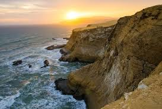
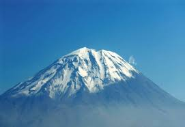
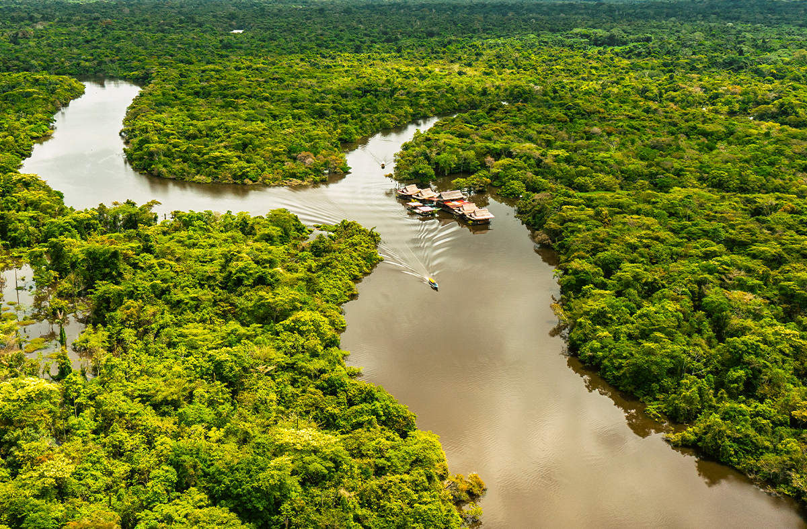
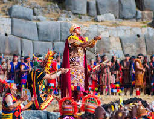
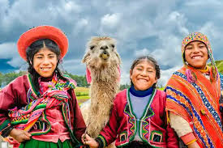

◈ Facts About Peru ◈
Coast
The Peruvian coast is mostly dry and desert-like, with mild temperatures in the north and cooler Humboldt-influenced weather in the south.
Andes
The Andes Mountains have a wide range of climates, from cold high-altitude peaks to temperate valleys. Snowfall is common at higher elevations.

Amazon
The Amazon basin in eastern Peru is hot and humid year-round, with heavy rainfall and dense tropical rainforest vegetation.

Geology
The Andes Mountains dominate the country, with volcanoes (like Misti) and high peaks (like Huascarán)
Biodiversity
Peru is one of the most biodiverse countries in the world, home to the Amazon rainforest and coastal deserts.
◇ Culture ◇
Festivals
Carnivals, Inti Raymi, and religious festivals showcase Peru's cultural richness.
Languages
Spanish, Quechua, and Aymara are widely spoken in the Andean region of the country.
◇ Gastronomy ◇
Ceviche
Peru's famous dish made with fresh fish marinated in citrus juices and spices.

Other Delicacies
Lomo Saltado, Aji de Gallina, and Pisco Sour highlight the culinary diversity.